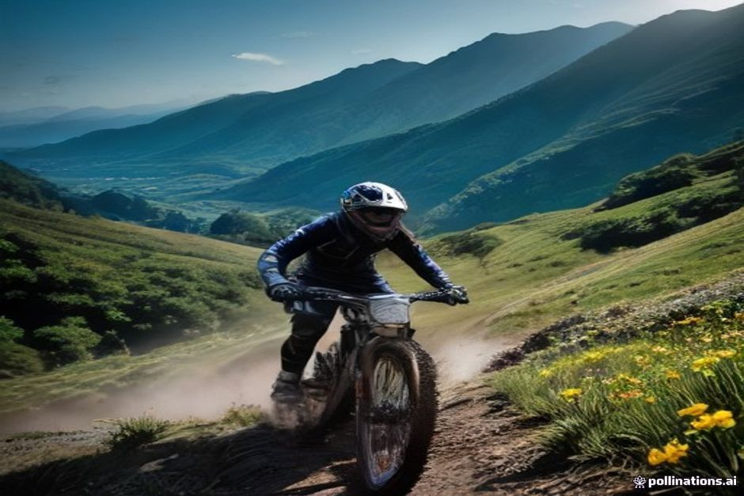
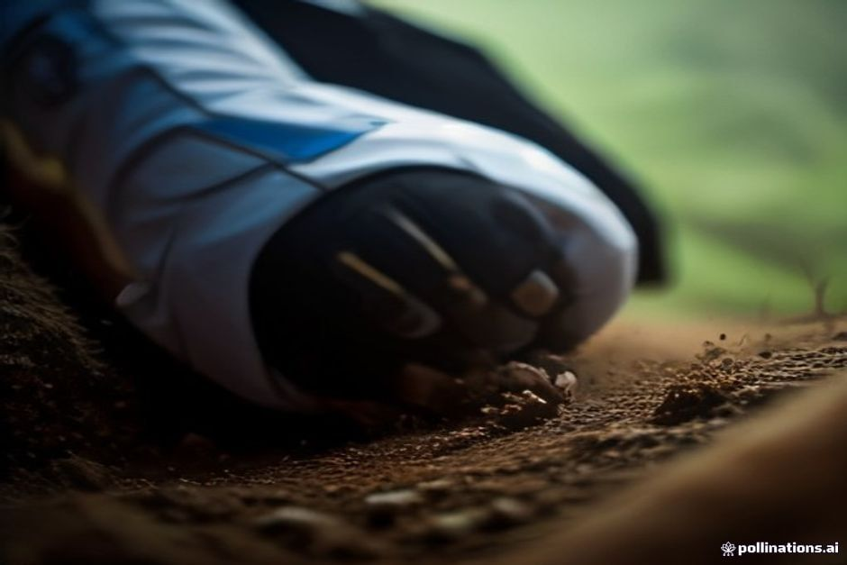

Vous avez vu passer « Trans Madeira 2026 » ou « 6 jours enduro 2026 » et vous voulez comprendre de quoi il s'agit ? C'est une course de VTT par étapes, parmi les plus dures du circuit, qui traverse tout Madère en six jours. Voici les dates, le format, le niveau demandé, et surtout ce que cela change (ou pas) si vous séjournez sur l'île à ce moment-là.
Trans Madeira 2026 en quelques lignes
- Quoi : une course d'enduro VTT chronométrée, par étapes, sous le nom Trans Madeira powered by Scott.
- Durée : six jours.
- Dates de l'édition d'automne : du 28 septembre au 3 octobre 2026.
- Format : plus de 30 spéciales, environ 250 km de sentiers et de liaisons.
- Participants : des professionnels de l'enduro et de très bons amateurs venus de toute l'Europe.
- Pour le visiteur : peu d'impact sur la route, et difficile à voir en direct.
Les 6 jours enduro : comment ça se passe
L'enduro, c'est du VTT en deux temps. Les spéciales sont chronométrées et se jouent en descente. Entre deux spéciales, les pilotes rejoignent le départ suivant en pédalant : ce sont les liaisons, qui ne sont pas chronométrées mais qui usent les jambes.
À Madère, cela donne plus de 30 spéciales réparties sur environ 250 km de sentiers et de liaisons. Contrairement à une épreuve de descente pure, l'endurance compte presque autant que la technique. Sur six jours d'affilée, c'est souvent elle qui fait la différence.

Dates de la Trans Madeira 2026 : pourquoi fin septembre ?
La Trans Madeira se court deux fois par an. L'édition d'été a lieu en mai, et l'édition d'automne 2026 a pour dates du 28 septembre au 3 octobre 2026.
Ce calendrier est voulu. Fin septembre, la grosse chaleur de l'été est retombée sur les sentiers exposés en altitude. Le sol est normalement encore assez sec pour bien accrocher, avant l'arrivée des mois d'hiver, plus humides.
Si vous lisez ces lignes après le 3 octobre, l'édition est terminée : retenez simplement que l'île accueille l'épreuve au printemps et à l'automne, et vérifiez les dates exactes auprès des organisateurs avant de planifier un voyage autour d'elle.
Le parcours : toute l'île, du nord au sud
Les six jours ne tournent pas en boucle dans la même forêt. Ils parcourent le nord, le sud, l'est et l'ouest de l'île, avec une nouvelle série de spéciales chaque jour.
Le détail de chaque spéciale reste en général discret jusqu'à la semaine de course. Les éditions précédentes ont toutefois compris des secteurs de haute montagne au-dessus de Funchal et de Câmara de Lobos, sur la côte sud, ainsi que des sentiers plus isolés au nord et à l'ouest.
L'idée est de montrer à quel point le terrain change sur une île plutôt petite : des crêtes volcaniques sèches à la forêt de lauriers, humide et sombre.
Quel niveau faut-il pour la Trans Madeira ?
Un très bon niveau. La course se situe dans la partie exigeante des épreuves d'enduro par étapes. Les journées font entre 35 et 60 km, liaisons comprises. Les sentiers vont du single track fluide en forêt aux crêtes exposées, au sol instable, où une erreur peut avoir de vraies conséquences.
Les participants sont des professionnels qui en font un temps fort de leur saison, et des amateurs aguerris qui se sont préparés spécialement à enchaîner six jours de course. Ce n'est pas un week-end décontracté, et ce n'est pas vraiment pensé pour un pilote qui découvre l'enduro.
Trans Madeira ou Rali da Madeira : ne pas confondre
La confusion est fréquente : même île, même idée de course chronométrée, et le mot « rallye » dans les conversations. Mais ce sont deux événements sans rapport.
- Le Rali da Madeira est un rallye automobile sur routes fermées. Des portions du réseau routier public sont bloquées pour ses épreuves chronométrées, généralement autour des vendanges d'automne.
- La Trans Madeira est une course de VTT qui se déroule presque entièrement sur des sentiers de randonnée et de VTT, hors route. Elle touche très rarement une route carrossable.
Pour un visiteur, la différence est concrète : l'un peut modifier vos trajets en voiture, l'autre non.
Peut-on voir la course quand on est de passage ?
Pas facilement. La plupart des spéciales empruntent d'étroits sentiers de montagne, loin des parkings et des points de vue publics. Ce n'est pas un sport que l'on suit depuis le bord de la route, comme un rallye sur routes fermées.
Le plus réaliste est de passer près d'un départ ou d'une arrivée de spéciale, ou de suivre la couverture quotidienne des organisateurs pendant la semaine. Ne comptez pas vous installer avec un café le long d'un sentier.
Votre séjour à Madère sera-t-il perturbé ?
À peine. La course reste sur des sentiers de randonnée et de VTT, pas sur le réseau routier public. Elle a donc peu d'effet sur les temps de trajet en voiture, les horaires des ferries ou les activités côtières. C'est tout le contraire des fermetures de routes d'un rallye automobile.
Si vous êtes sur l'île cette semaine-là pour autre chose, une balade le long d'une levada, un déjeuner à Funchal ou une sortie en mer, vos plans ne devraient pas en souffrir. Pour d'autres idées, consultez nos excursions en bateau à Madère et nos infos pratiques.
Une semaine de course ? Prenez le large
Si six jours d'enduro en altitude ne correspondent pas à votre idée de vacances, la mer offre l'exact opposé. Avec Chifbay, vous naviguez le long de la côte sud, au pied des falaises que les pilotes dominent parfois de très haut. Aucune condition physique de cycliste n'est demandée, ni maîtrise des sentiers, ni dossard.
Le bateau est privé : un seul groupe, jusqu'à 5 personnes, avec deux skippers de Madère titulaires de la licence. Le départ se fait à la Marina do Funchal, ponton C. Les prix valent pour tout le bateau, jamais par personne.
- Sortie à la journée (départ à 10h00 ou 14h00) : 2h30 jusqu'à Ribeira Brava pour 500 EUR, ou 3h jusqu'à Ponta do Sol pour 600 EUR. Au programme : Câmara de Lobos, Cabo Girão, baignade et paddle à la Fajã dos Padres.
- Coucher de soleil : départ 1h15 avant le coucher du soleil, toute l'année. 2h jusqu'à Cabo Girão pour 400 EUR, ou 2h30 jusqu'à Ribeira Brava pour 500 EUR, sans arrêt baignade. Découvrez la croisière au coucher du soleil.
Repas et boissons à bord, vidéo 360° Insta360, images de drone (si la météo le permet) et photos prises avec un vrai appareil sont inclus. L'annulation est gratuite jusqu'à 24 heures avant le départ. Toutes les formules sont sur la page expériences.

Le mot de la fin
La Trans Madeira est un événement très sérieux pour ceux qui y courent. Pour tous les autres, elle reste un bruit de fond. Elle rappelle surtout combien de paysages Madère concentre dans une si petite île volcanique, que vous la traversiez à vélo ou que vous regardiez défiler ses falaises depuis un bateau.
Une île, deux façons très différentes d'y passer six jours.